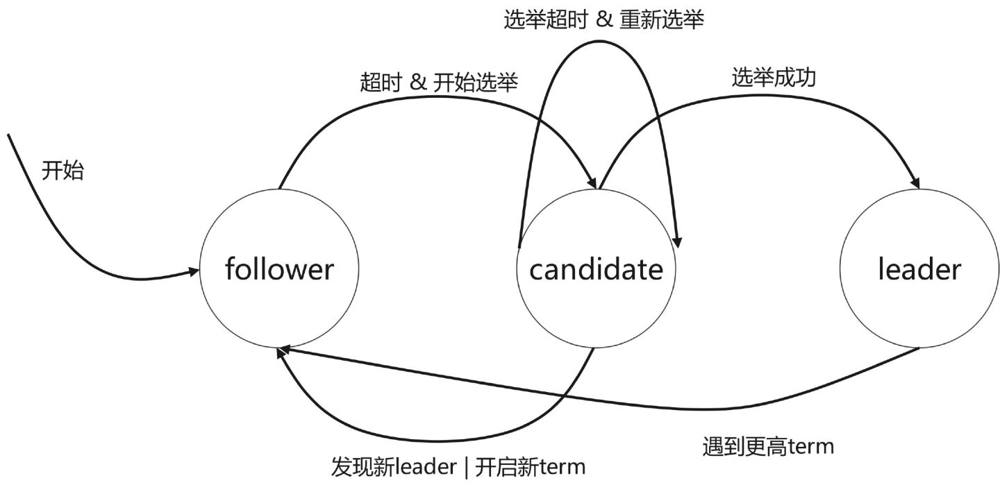
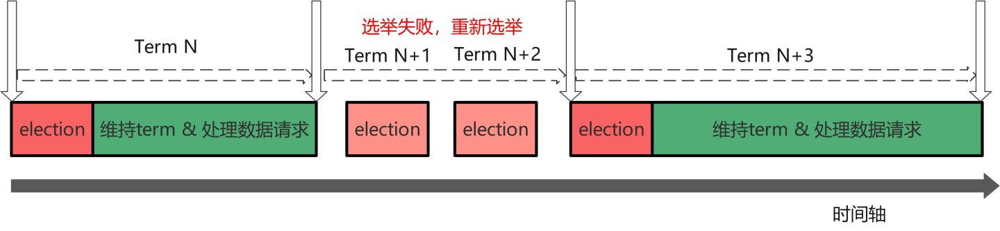
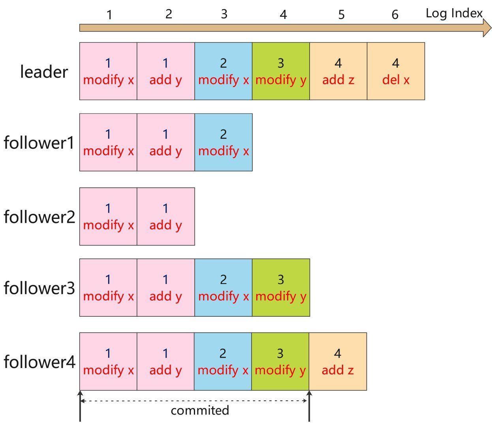
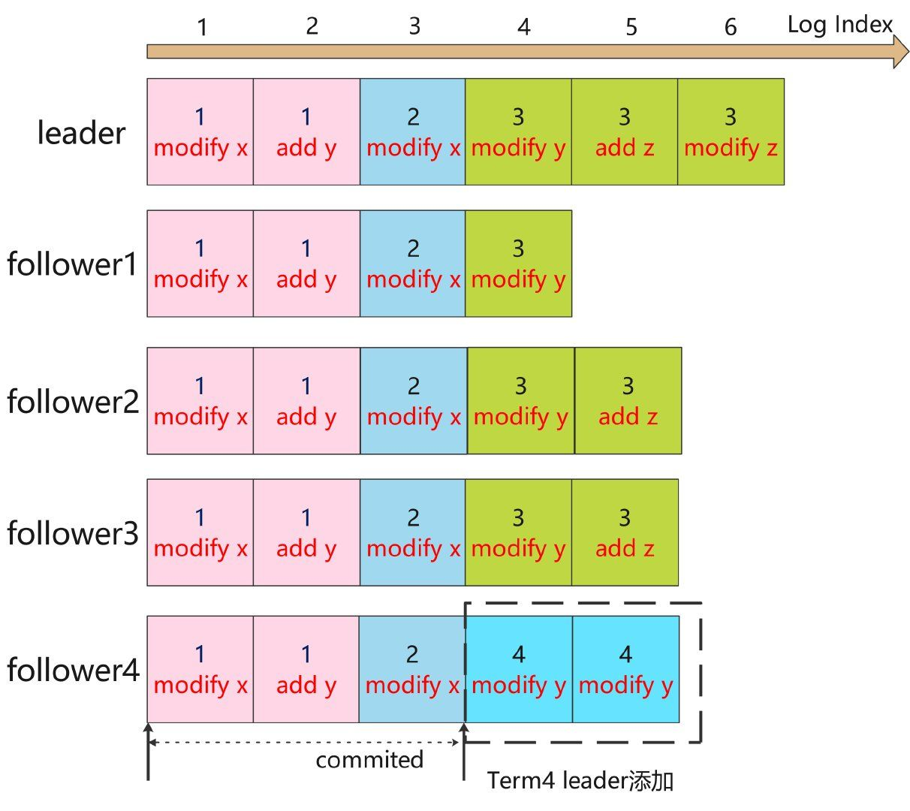
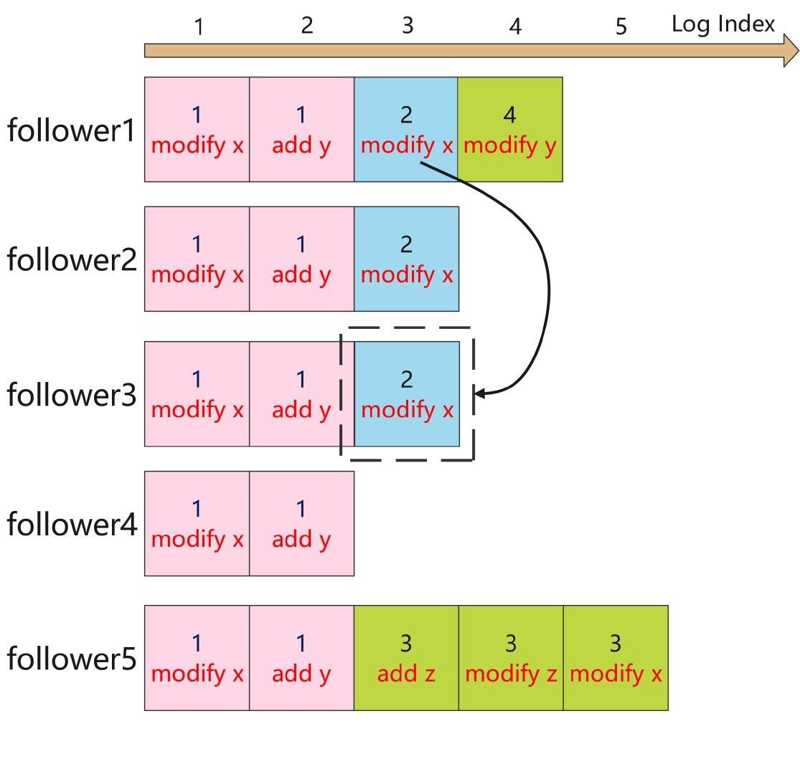

- AQS 万字图文全面解析.md.html
- Docker 镜像构建原理及源码分析.md.html
- ElasticSearch 小白从入门到精通.md.html
- JVM CPU Profiler技术原理及源码深度解析.md.html
- JVM 垃圾收集器.md.html
- JVM 面试的 30 个知识点.md.html
- Java IO 体系、线程模型大总结.md.html
- Java NIO浅析.md.html
- Java 面试题集锦（网络篇）.md.html
- Java-直接内存 DirectMemory 详解.md.html
- Java中9种常见的CMS GC问题分析与解决（上）.md.html
- Java中9种常见的CMS GC问题分析与解决（下）.md.html
- Java中的SPI.md.html
- Java中的ThreadLocal.md.html
- Java线程池实现原理及其在美团业务中的实践.md.html
- Java魔法类：Unsafe应用解析.md.html
- Kafka 源码阅读笔记.md.html
- Kafka、ActiveMQ、RabbitMQ、RocketMQ 区别以及高可用原理.md.html
- MySQL · 引擎特性 · InnoDB Buffer Pool.md.html
- MySQL · 引擎特性 · InnoDB IO子系统.md.html
- MySQL · 引擎特性 · InnoDB 事务系统.md.html
- MySQL · 引擎特性 · InnoDB 同步机制.md.html
- MySQL · 引擎特性 · InnoDB 数据页解析.md.html
- MySQL · 引擎特性 · InnoDB崩溃恢复.md.html
- MySQL · 引擎特性 · 临时表那些事儿.md.html
- MySQL 主从复制 半同步复制.md.html
- MySQL 主从复制 基于GTID复制.md.html
- MySQL 主从复制.md.html
- MySQL 事务日志(redo log和undo log).md.html
- MySQL 亿级别数据迁移实战代码分享.md.html
- MySQL 从一条数据说起-InnoDB行存储数据结构.md.html
- MySQL 地基基础：事务和锁的面纱.md.html
- MySQL 地基基础：数据字典.md.html
- MySQL 地基基础：数据库字符集.md.html
- MySQL 性能优化：碎片整理.md.html
- MySQL 故障诊断：一个 ALTER TALBE 执行了很久，你慌不慌？.md.html
- MySQL 故障诊断：如何在日志中轻松定位大事务.md.html
- MySQL 故障诊断：教你快速定位加锁的 SQL.md.html
- MySQL 日志详解.md.html
- MySQL 的半同步是什么？.md.html
- MySQL中的事务和MVCC.md.html
- MySQL事务_事务隔离级别详解.md.html
- MySQL优化：优化 select count().md.html
- MySQL共享锁、排他锁、悲观锁、乐观锁.md.html
- MySQL的MVCC（多版本并发控制）.md.html
- QingStor 对象存储架构设计及最佳实践.md.html
- RocketMQ 面试题集锦.md.html
- SnowFlake 雪花算法生成分布式 ID.md.html
- Spring Boot 2.x 结合 k8s 实现分布式微服务架构.md.html
- Spring Boot 教程：如何开发一个 starter.md.html
- Spring MVC 原理.md.html
- Spring MyBatis和Spring整合的奥秘.md.html
- Spring 帮助你更好的理解Spring循环依赖.md.html
- Spring 循环依赖及解决方式.md.html
- Spring中眼花缭乱的BeanDefinition.md.html
- Vert.x 基础入门.md.html
- eBay 的 Elasticsearch 性能调优实践.md.html
- 不可不说的Java“锁”事.md.html
- 互联网并发限流实战.md.html
- 从ReentrantLock的实现看AQS的原理及应用.md.html
- 从SpringCloud开始，聊微服务架构.md.html
- 全面了解 JDK 线程池实现原理.md.html
- 分布式一致性理论与算法.md.html
- 分布式一致性算法 Raft.md.html
- 分布式唯一 ID 解析.md.html
- 分布式链路追踪：集群管理设计.md.html
- 动态代理种类及原理，你知道多少？.md.html
- 响应式架构与 RxJava 在有赞零售的实践.md.html
- 大数据算法——布隆过滤器.md.html
- 如何优雅地记录操作日志？.md.html
- 如何设计一个亿级消息量的 IM 系统.md.html
- 异步网络模型.md.html
- 当我们在讨论CQRS时，我们在讨论些神马？.md.html
- 彻底理解 MySQL 的索引机制.md.html
- 最全的 116 道 Redis 面试题解答.md.html
- 有赞权限系统(SAM).md.html
- 有赞零售中台建设方法的探索与实践.md.html
- 服务注册与发现原理剖析（Eureka、Zookeeper、Nacos）.md.html
- 深入浅出Cache.md.html
- 深入理解 MySQL 底层实现.md.html
- 漫画讲解 git rebase VS git merge.md.html
- 生成浏览器唯一稳定 ID 的探索.md.html
- 缓存 如何保证缓存与数据库的双写一致性？.md.html
- 网易严选怎么做全链路监控的？.md.html
- 美团万亿级 KV 存储架构与实践.md.html
- 美团点评Kubernetes集群管理实践.md.html
- 美团百亿规模API网关服务Shepherd的设计与实现.md.html
- 解读《阿里巴巴 Java 开发手册》背后的思考.md.html
- 认识 MySQL 和 Redis 的数据一致性问题.md.html
- 进阶：Dockerfile 高阶使用指南及镜像优化.md.html
- 铁总在用的高性能分布式缓存计算框架 Geode.md.html
- 阿里云PolarDB及其共享存储PolarFS技术实现分析（上）.md.html
- 阿里云PolarDB及其共享存储PolarFS技术实现分析（下）.md.html
- 面试最常被问的 Java 后端题.md.html
- 领域驱动设计在互联网业务开发中的实践.md.html
- 领域驱动设计的菱形对称架构.md.html
- 高效构建 Docker 镜像的最佳实践.md.html
分布式一致性算法 Raft
一、Raft 算法背景
在学术理论界，分布式一致性算法的代表还是 Paxos，但是少数理解的人觉得很简单，尚未理解的觉得很难，大多数人还是一知半解。Paxos 的可理解性 & 工程落地性的门槛很高。斯坦福学者花了很多时间理解 Paxos，于是他们研究出来 Raft。本文主要是介绍 Raft 算法的基本原理。
二、Raft 算法基本原理
共识算法就是保证一个集群的多台机器协同工作，在遇到请求时，数据能够保持一致。即使遇到机器宕机，整个系统仍然能够对外保持服务的可用性。
Raft 将共识问题分解三个子问题：
- Leader election 领导选举：有且仅有一个 leader 节点，如果 leader 宕机，通过选举机制选出新的 leader；
- Log replication 日志复制：leader 从客户端接收数据更新/删除请求，然后日志复制到 follower 节点，从而保证集群数据的一致性；
- Safety 安全性：通过安全性原则来处理一些特殊 case，保证 Raft 算法的完备性；
所以，Raft 算法核心流程可以归纳为：
- 首先选出 leader，leader 节点负责接收外部的数据更新/删除请求；
- 然后日志复制到其他 follower 节点，同时通过安全性的准则来保证整个日志复制的一致性；
- 如果遇到 leader 故障，followers 会重新发起选举出新的 leader；
这里先介绍一下日志同步的概念：服务器接收客户的数据更新/删除请求，这些请求会落地为命令日志。只要输入状态机的日志命令相同，状态机的执行结果就相同。所以 Raft 的核心就是 leader 发出日志同步请求，follower 接收并同步日志，最终保证整个集群的日志一致性。

2.1 Leader Election 领导选举
集群中每个节点只能处于 Leader、Follower 和 Candidate 三种状态的一种:
- follower 从节点：
- 节点默认是 follower；
- 如果**刚刚开始 ** 或 和 leader 通信超时，follower 会发起选举，变成 candidate，然后去竞选 leader；
- 如果收到其他 candidate 的竞选投票请求，按照先来先得 & 每个任期只能投票一次 的投票原则投票;
- candidate 候选者：
- follower 发起选举后就变为 candidate，会向其他节点拉选票。candidate 的票会投给自己，所以不会向其他节点投票
- 如果获得超过半数的投票，candidate 变成 leader，然后马上和其他节点通信，表明自己的 leader 的地位；
- 如果选举超时，重新发起选举；
- 如果遇到更高任期 Term 的 leader 的通信请求，转化为 follower；
- leader 主节点：
- 成为 leader 节点后，此时可以接受客户端的数据请求，负责日志同步；
- 如果遇到更高任期 Term 的 candidate 的通信请求，这说明 candidate 正在竞选 leader，此时之前任期的 leader 转化为 follower，且完成投票；
- 如果遇到更高任期 Term 的 leader 的通信请求，这说明已经选举成功新的 leader，此时之前任期的 leader 转化为 follower；
具体的节点状态转换参考下图：

Raft 算法把时间轴划分为不同任期 Term。每个任期 Term 都有自己的编号 TermId，该编号全局唯一且单调递增。如下图，每个任务的开始都** Leader Election 领导选举**。如果选举成功，则进入维持任务 Term 阶段，此时 leader 负责接收客户端请求并，负责复制日志。Leader 和所有 follower 都保持通信，如果 follower 发现通信超时，TermId 递增并发起新的选举。如果选举成功，则进入新的任期。如果选举失败，TermId 递增，然后重新发起选举直到成功。
举个例子，参考下图，Term N 选举成功，Term N+1 和 Term N+2 选举失败，Term N+3 重新选举成功。

具体的说，Leader 在任期内会周期性向其他 follower 节点发送心跳来维持地位。follower 如果发现心跳超时，就认为 leader 节点宕机或不存在。随机等待一定时间后，follower 会发起选举，变成 candidate，然后去竞选 leader。选举结果有三种情况：
- 获取超过半数投票，赢得选举：
-
当 Candidate 获得超过半数的投票时，代表自己赢得了选举，且转化为 leader。此时，它会马上向其他节点发送请求，从而确认自己的 leader 地位，从而阻止新一轮的选举；
-
投票原则：当多个 Candidate 竞选 Leader 时：
-
- 一个任期内，follower 只会投票一次票，且投票先来显得；
- Candidate 存储的日志至少要和 follower 一样新（安全性准则），否则拒绝投票；
- 投票未超过半数，选举失败：
- 当 Candidate 没有获得超过半数的投票时，说明多个 Candidate 竞争投票导致过于分散，或者出现了丢包现象。此时，认为当期任期选举失败，任期 TermId+1，然后发起新一轮选举；
- 上述机制可能出现多个 Candidate 竞争投票，导致每个 Candidate 一直得不到超过半数的票，最终导致无限选举投票循环；
- 投票分散问题解决： Raft 会给每个 Candidate 在固定时间内随机确认一个超时时间（一般为 150-300ms）。这么做可以尽量避免新的一次选举出现多个 Candidate 竞争投票的现象；
- 收到其他 Leader 通信请求：
- 如果 Candidate 收到其他声称自己是 Leader 的请求的时候，通过任期 TermId 来判断是否处理；
- 如果请求的任期 TermId 不小于 Candidate 当前任期 TermId，那么 Candidate 会承认该 Leader 的合法地位并转化为 Follower；
- 否则，拒绝这次请求，并继续保持 Candidate；
简单的多，Leader Election 领导选举 通过若干的投票原则，保证一次选举有且仅可能最多选出一个 leader，从而解决了脑裂问题。
2.2 Log Replication 日志复制
选举 leader 成功后，整个集群就可以正常对外提供服务了。Leader 接收所有客户端请求，然后转化为 log 复制命令，发送通知其他节点完成日志复制请求。每个日志复制请求包括状态机命令 & 任期号，同时还有前一个日志的任期号和日志索引。状态机命令表示客户端请求的数据操作指令，任期号表示 leader 的当前任期。
follower 收到日志复制请求的处理流程：
- follower 会使用前一个日志的任期号和日志索引来对比自己的数据：
- 如果相同，接收复制请求，回复 ok；
- 否则回拒绝复制当前日志，回复 error；
- leader 收到拒绝复制的回复后，继续发送节点日志复制请求，不过这次会带上更前面的一个日志任期号和索引；
- 如此循环往复，直到找到一个共同的任期号&日志索引。此时 follower 从这个索引值开始复制，最终和 leader 节点日志保持一致；
- 日志复制过程中，Leader 会无限重试直到成功。如果超过半数的节点复制日志成功，就可以任务当前数据请求达成了共识，即日志可以 commite 提交了；
综上， Log Replication 日志复制有两个特点：
- 如果在不同日志中的两个条目有着相同索引和任期号，则所存储的命令是相同的，这点是由 leader 来保证的；
- 如果在不同日志中的两个条目有着相同索引和任期号，则它们之间所有条目完全一样，这点是由日志复制的规则来保证的；
举个例子，最上面表示日志索引，这个是保证唯一性。每个方块代表指定任期内的数据操作，目前来看，LogIndex 1-4 的日志已经完成同步，LogIndex 5 的正在同步，LogIndex6 还未开始同步。Raft 日志提交的过程有点类似两阶段原子提交协议 2PC，不过和 2PC 的最大区别是，Raft 要求超过一般节点同意即可 commited，2PC 要求所有节点同意才能 commited。

日志不一致问题：在正常情况下，leader 和 follower 的日志复制能够保证整个集群的一致性，但是遇到 leader 崩溃的时候，leader 和 follower 日志可能出现了不一致的状态，此时 follower 相比 leader 缺少部分日志。
为了解决数据不一致性，Raft 算法规定 follower 强制复制 leader 节日的日志，即 follower 不一致日志都会被 leader 的日志覆盖，最终 follower 和 leader 保持一致。简单的说，从前向后寻找 follower 和 leader 第一个公共 LogIndex 的位置，然后从这个位置开始，follower 强制复制 leader 的日志。但是这么多还有其他的安全性问题，所以需要引入Safety 安全性规则 。
2.3 Safety 安全性
当前的 Leader election 领导选举 和 Log replication 日志复制并不能保证 Raft 算法的安全性，在一些特殊情况下，可能导致数据不一致，所以需要引入下面安全性规则。
2.3.1 Election Safety 选举安全性：避免脑裂问题
选举安全性要求一个任期 Term 内只能有一个 leader，即不能出现脑裂现象，否者 raft 的日志复制原则很可能出现数据覆盖丢失的问题。Raft 算法通过规定若干投票原则来解决这个问题：
- 一个任期内，follower 只会投票一次票，且先来先得；
- Candidate 存储的日志至少要和 follower 一样新；
- 只有获得超过半数投票才有机会成为 leader；
2.3.2 Leader Append-Only 日志只能由 leader 添加修改
Raft 算法规定，所有的数据请求都要交给 leader 节点处理，要求：
- leader 只能日志追加日志，不能覆盖日志；
- 只有 leader 的日志项才能被提交，follower 不能接收写请求和提交日志；
- 只有已经提交的日志项，才能被应用到状态机中；
- 选举时限制新 leader 日志包含所有已提交日志项；
2.3.3 Log Matching 日志匹配特性
这点主要是为了保证日志的唯一性，要求：
- 如果在不同日志中的两个条目有着相同索引和任期号，则所存储的命令是相同的；
- 如果在不同日志中的两个条目有着相同索引和任期号，则它们之间所有条目完全一样；
2.3.4 Leader Completeness 选举完备性：leader 必须具备最新提交日志
Raft 规定：只有拥有最新提交日志的 follower 节点才有资格成为 leader 节点。 具体做法：candidate 竞选投票时会携带最新提交日志，follower 会用自己的日志和 candidate 做比较。
- 如果 follower 的更新，那么拒绝这次投票；
- 否则根据前面的投票规则处理。这样就可以保证只有最新提交节点成为 leader；
因为日志提交需要超过半数的节点同意，所以针对日志同步落后的 follower（还未同步完全部日志，导致落后于其他节点）在竞选 leader 的时候，肯定拿不到超过半数的票，也只有那些完成同步的才有可能获取超过半数的票成为 leader。
日志更新判断方式是比较日志项的 term 和 index：
- 如果 TermId 不同，选择 TermId 最大的；
- 如果 TermId 相同，选择 Index 最大的；
下面举个例子来解释为什么需要这个原则，如下图，假如集群中 follower4 在 LogIndex3 故障宕机，经过一段时间间，任期 Term3 的 leader 接收并提交了很多日志（LogIndex1-5 已经提交，LogIndex6 正在复制中）。然后 follower4 恢复正常，在没有和 leader 完成同步日志的情况下，如果 leader 突然宕机，此时开始领导选举。再假设在 Term4 follower4 当选 leader。根据日志复制的规则，其他 follower 强制复制 leader 的日志，那么已经提交却没完成同步的日志将会被强制覆盖掉，这回导致已提交日志被覆盖。

2.3.5 State Machine Safety 状态机安全性：确保当前任期日志提交
考虑到当前的日志复制规则
- 当前 follower 节点强制复制 leader 节点；
- 假如以前 Term 日志复制超过半数节点，在面对当前任期日志的节点比较中，很明显当前任期节点更新，有资格成为 leader；
上述两条就可能出现已有任期日志被覆盖的情况，这意味着已复制超过半数的以前任期日志被强制覆盖了，和前面提到的日志安全性矛盾。
所以，Raft 对日志提交有额外安全机制：leader 只能提交当前任期 Term 的日志，旧任期 Term（以前的数据）只能通过当前任期 Term 的数据提交来间接完成提交。简单的说，日志提交有两个条件需要满足：
- 当前任期；
- 复制结点超过半数；
下面举个例子来解释为什么需要这个原则，如下图：

- 任期 Term2：
- follower1 是 leader，此时 LogIndex3 已经复制到 follower2，且正在给 follower3 复制，此时 follower 突然宕机；
- 任期 Term3：
- leader 选举。follower5 发起投票，可以得到自己、follower3、follower4 的票（3/5），最终成为 leader；
- 在任期 Term3 内，提交接收客户请求并提交 LogIndex3-5，但是暂时未复制到其他节点，然后宕机；
- 任期 Term4：
- leader 选举，follower1 发起选举，可以得到自己、follower2、follower3、follower4 的票（4/5），最终成为 leader；
- 此时 follower1 将 LogIndex3 复制到 follower3，此时 LogIndex3 复制超过半数，接着在本地提交了 LogIndex4，然后宕机；
- 任期 Term4：
- leader 选举：follower5 发起选举，可以得到自己、follower2、follower3、follower4 的票（4/5），最终成为 leader；
- 此时其他节点需要强制复制 follower5 的日志，那么 follower1、follower2、follower3 的日志被强制覆盖掉。即虽然 LogIndex3 被复制到了超过半数节点，但也有可能被覆盖掉；
如何解决这个问题呢？Raft 在日志项提交上增加了限制：只有 当前任期 且 复制超过半数 的日志才可以提交。即只有 LogIndex4 提交后，LogIndex3 才会被提交。
三、Paxos VS Raft：这个世界上只有一种一致性算法，那就是 Paxos
Basic Paxos 算法没有 leader proposer 角色，是一个纯粹的去中心化的分布式算法，但是它存在若干不足（只能单值共识 & 活锁 & 网络开销大）。所以才有了以 leader proposer 为核心的 Multi Paxos 算法（由一个去中心化的算法变为 leader-based 的算法）。Raft 算法相当于 Multi Paxos 的进一步优化，主要通过增加两个限制：
- 日志添加次序性：
- Raft 要求日志必须要串行连续添加的；
- Multi Paxos 可以并发添加日志，没有顺序性要求，所以日志可能存在空洞现象；
- 选主限制：
- Raft 要求只有拥有最新日志的节点才有资格当选 leader，因为日志是串行连续添加的，所以 Raft 能够根据日志确认最新节点；
- 在 Multi Paxos 算法中由于日志是并发添加的，所以无法确认最新日志的节点，所以 Multi Paxos 可以选择任意节点作为了 leader proposer 节点，成为 leader 节点后需要把其他日志补全；
下面是我个人的理解：
- 作为分布式算法，Raft 的规则限制很多，但是每个规则都简单易懂，最重要的是 leader-based 的，整个程序是一个串行的流程，这使得更加容易理解和实现；
- 作为对比，Multi Paxos 的限制就很少了，每个节点都可以成为 leader，并发添加日志，这使得理解和落地就没那么简单；
- 不同业务场景下有着不同的述求，所以一致性算法选择 Multi Paxos 还是 Raft 看各自需求。
四、总结
Raft 协议就是一种 leader-based 的共识算法，算法设计出发点就是可理解性以及工程的落地性。学习总结分布式一致性算法 Paxos 和 Raft 对我们理解、设计、实现、部署、测试分布式系统都大有益处，如果文章有啥不合适的地方，希望提出宝贵意见。